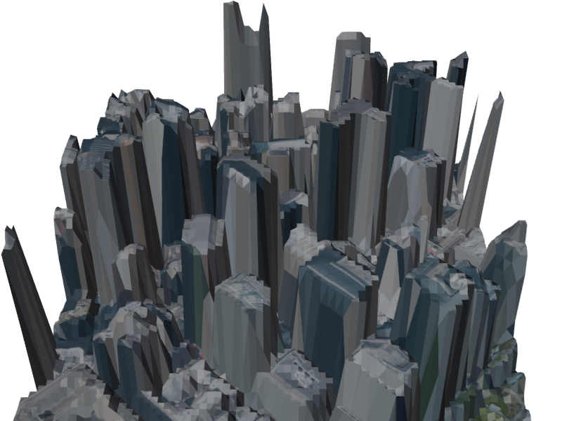
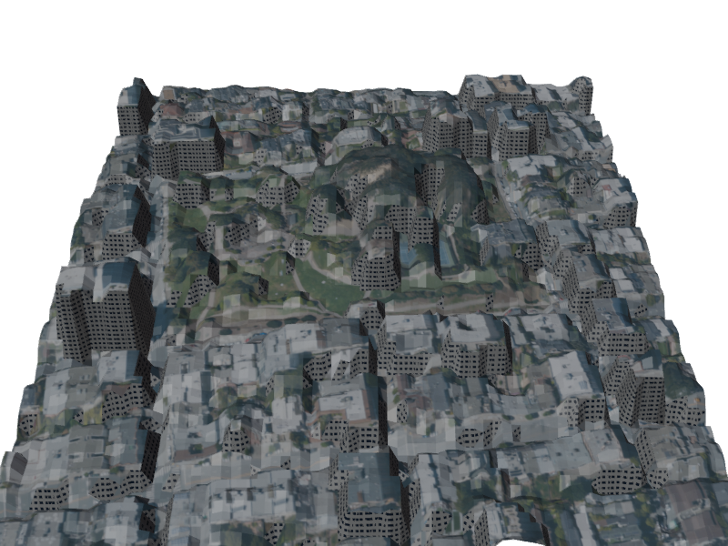
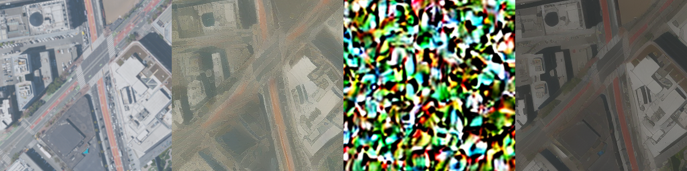

Give it a location and it builds the place as a glTF, from public aerial imagery and LiDAR. Each step runs an existing, swappable tool and is checked before it hands off; a failed check is rerun or rescoped, never passed silently.

Unretouched output of our latest run: about 540 m of San Francisco’s Financial District, from public aerial imagery and LiDAR to a single glTF, with building heights measured from LiDAR and the aerial photo on the roofs. The window grid on the walls is generated from each building’s measured height (one floor per 3.5 m), not photographed. Download the glTF (2.4 MB), or orbit it above with no install.

Same run, a different place: Pacific Heights and Lafayette Park, hills and houses instead of towers, unretouched. Not every place builds yet: of five US sites we tried, three (Haight, Mission, Civic Center) failed the construction check (no usable LiDAR heights) and were not built. Download the glTF (2.3 MB)
From above you see roofs. Walls, overhangs and anything hidden have to come from somewhere else: measure first, generate last, and mark every surface that was inferred.
How we’ll do it
Sort the tall things. Trees and buildings are equally tall from above. The infrared band of the same aerial photo tells leaves from roofs, and public building footprints split the blocks.
Keep what was measured. LiDAR already gives each roof’s height and often its shape. Nothing is invented where a sensor saw it.
Fill the sides nobody saw. Pick a facade style from the building’s type, age and roof colour, and set the floors from its measured height. A generative model is the upgrade, not the start.
Check against data we held back. Compare footprints and heights with measurements the model never saw.
Checked against hand labels. We labelled tall groups by eye from the aerial photo and tuned the infrared cut-off on them. On two further sites, Pacific Heights and Embarcadero, labelled blind, the tree-or-building call is right for 85 of 88 groups; calling every group a building gets 75. The misses are narrow tree strips and a building ringed by trees. Labels are one person’s eyeball, not ground truth, and the sites are two neighbourhoods of one city.
Every inferred surface is tagged as inferred, with a low confidence, so a facade is never mistaken for a measurement.
Base colour, normal, roughness, height, with de-lighting included
Driven by
Python API for scripts and plugins inside Sampler. Running it without the app open is not documented.
6 of 7
De-lighting
Take the sun and shadows of the capture day out of the colour, so the asset works under any lighting.
Every production tool here assumes the capture avoided hard sun. Unity’s own guide calls strong directional shadows “a situation that must be avoided”. Aerial imagery is flown in sunlight, so hard shadows are always in the input. Studios de-light one photo. We don’t have to: a real place has been photographed many times under different suns, and we know its shape.
How we’ll do it
Measure the light. Fit the sun to the shadows, using the building heights we already have. Our harness already starts from the capture date: for the San Francisco tile (18 May 2022) it computes the sun at 34° above the horizon, azimuth 91°, and writes it into the glTF as a light. We then tested that nominal time against the photo’s own shadows (a 74×93 m patch of the Financial District): shadowed ground is no darker than lit ground at 16:00 UTC, so the assumed time is wrong. The shadows match best near 21:30 UTC, sun 64° high, azimuth 231°. The time has to be fitted from the shadows, not read from the metadata.
Divide it out. With the light known, the surface colour falls out. Shadows are dim, not lost.
Use every capture. Each surface is lit in some photos and shaded in others. Combine them.
Check against a photo we never used. Relight the result under that photo’s sun and compare.
Where it can’t be measured (facades, glass, trees that have grown since), a model fills in and the asset marks it as inferred. Step 4 is a score no person has to give, so an agent loop can try, check against the held-out photo, and keep what wins, place by place.

Why not one model on one photo. We ran the best aerial de-lighting model we found (Olbedo) on our tile: NAIP, San Francisco, 18 May 2022. Left, the input. Right, what came back. The shadows stay. It was trained on drone photos, not straight-down imagery.
Unknown for aerial imagery. Its albedo comes from indoor synthetic datasets (InteriorVerse, Hypersim), so roofs and roads from above are out of what it has seen.
Research (Ohio State and USC, CVPR 2026) · Code Apache-2.0, data CC BY 4.0, weights RAIL++-M and Adobe Research licence
In
A single aerial photo
Out
An albedo map (colour with the lighting taken out)
Driven by
Python, from the released inference code and pretrained models; trained on 5,664 drone photos
Note
The first de-lighting model we have found trained on aerial photos. Its reference albedo is computed by the authors’ own inverse-rendering pipeline, not measured on the ground, and the photos are drone shots rather than straight-down imagery like NAIP. We ran it on our spot: the shadows stay (see above). The weights carry use restrictions (RAIL++-M for the Marigold models; the Adobe Research licence for the RGBX models), so commercial use needs a read of both first.
NAIP aerial imagery, a USGS 3DEP LiDAR surface model, the flight date
Out
A cast-shadow mask computed from the geometry, and colour corrected inside it
Driven by
Our code
Idea
Aerial shadows are hard, but they are cast by geometry we already have. Find the sun direction whose shadows over the surface model best match the dark pixels, and the shadow is measured rather than guessed. Then match each shadowed surface to the same surface in sun.
Breaks on
NAIP records the date but not the time, so the sun direction has to be fitted. LiDAR and imagery can be years apart, so trees and new buildings won’t line up.
Everything we have for the place: aerial imagery, LiDAR, licensed street photos, and a material library
Out
Geometry and PBR materials authored clean, with no lighting baked in
Driven by
Agents in headless Blender, picking a library material per surface and measuring its colour from the sunlit pixels
Idea
What artists do when the capture can’t be de-lit: use the photos as reference and rebuild by hand. Nothing is baked in, so there is nothing to remove. Colour only has to be measured once per surface, from the parts in sun.
Check
Render the rebuild under the fitted sun and compare it with the original photo.
Breaks on
Fidelity. You get the place’s materials, not its exact pixels, so stains, patches and signage are lost or have to be authored. The hardest path here, and the only one that always ends clean.
7 of 7
Compilation
Import, assign, and set up to the project’s conventions.
Editor in batch mode running an editor script (-batchmode -nographics -executeMethod), no GPU needed
We’d love to hear from you
Tell us which place, how you build it today, and what it costs you in people and weeks. Or, if you run one of these tools, tell us which and where it breaks. We would like to talk.